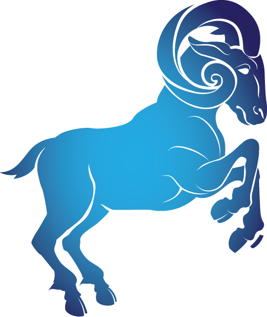
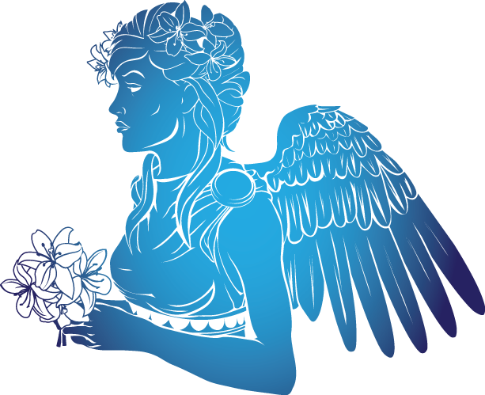

Знаки зодиака
Истории
Звездные карты
Астрологические прогнозы

Знаки зодиака — 12 секторов по 30°, на которые в астрологии разделён зодиакальный пояс, каждому из этих участков приписываются определённые метафизические свойства, играющие роль при анализе гороскопов.
Для знака Овен характерны жизнестойкость, сила воли, но также и импульсивность, и нетерпение, затрудняющее длительную работу в одном направлении. Овны инициативны, сразу включаются в действие и обычно берут на себя роль лидера, но при этом слишком прямолинейны и самоуверенны. Они честолюбивы, полны желания быть первыми везде и во всем, заслужить комплименты и признание.
Тельцы сильны, уверенны в себе, работоспособны, терпеливы и рассудительны. Им присущ практический ум и основательность. Они упорны в достижении цели, умеют долго, планомерно и усердно работать, добиваясь, в конце концов, желаемого результата. В то же время любовь к прекрасному, совершенному помогают Тельцам счастливо сочетать высокие деловые качества, умение прочно стоять на ногах с чувством гармонии и стремлением привнести ее в окружающий мир.
Близнецы двойственны и противоречивы по характеру. У них могут соседствовать противоположные пристрастия и привязанности, они часто стремятся совместить несовместимое и заниматься одновременно совершенно разными делами. И, в общем, им это удается. Высокая подвижность заставляет Близнецов непрерывно искать что-то новое, активно перемещаться в пространстве, расширять свой кругозор и сферу общения.

Как правило, они доброжелательны, любезны, что в сочетании с осторожностью может дать дипломатические способности. Характерно большое самолюбие, порой граничащее с тщеславием и самодовольством. Склонность придавать значение тому, что для других кажется мелочами, иногда делает Раков по-детски беспомощными, упрямыми, нелогичными. Вообще, окружающим их поведение кажется порой зага дочным, а мысли Раков угадать нелегко.
По натуре Львы наделены качествами, которые традиционно приписываются царственным особам: чувством собственного превосходства, гордостью, желанием быть в центре внимания и повелевать. Даже их манеры и внешность порой несут на себе отпечаток царственности, чувства собственной значимости и права на первое место везде, куда бы ни ступила их нога.
Девы умеют анализировать и видеть мельчайшие детали. По натуре Дева человек серьезный, практичный, самостоятельный, умеющий четко планировать свои занятия, соблюдать режим дня, любящий порядок и пунктуальность. Их ясный и цепкий ум, способный трезво и критически рассмотреть и проанализировать любую проблему, является для Дев основной опорой и инструментом в жизни. По своему характеру они рационалистичны, порой до педантичности.
По характеру Весы общительны, любят светские развлечения, часто блистают в обществе, будучи обаятельными, остроумными и привлекательными. У них хороший вкус, манеры, умение красиво одеваться и способность очаровывать окружающих. Врожденные качества Весов — элегантность, такт и чувство меры. Весы также умеют примирять враждующие стороны, достигать компромиссов в безнадежных ситуациях, стремясь к равновесию и гармонии и пытаясь установить их в своем окружении.

Скорпионы обладают магнетизмом, притягательностью, интуицией, способны видеть то, чего не видят окружающие. Они крайне чувствительны, обостренно воспринимают все нюансы чувств и настроений окружающих и своих собственных. Скорпионы весьма ранимы, обидчивы, никогда ничего не забывают и все учитывают в последующих отношениях с людьми. Они достаточно жестки и решительны в своих суждениях и высказываниях, остры на язык и склонны к иронии.
Основными качествами Стрельцов являются искренность и открытость, склонность резать правду-матку в глаза без всякой задней мысли, чем они могут нажить себе врагов и осложнить жизнь. Стрельцы легко воодушевляются, бывают, вспыльчивы, но быстро отходят, любят зажигать людей своим примером, но сами долго «гореть» не в состоянии.
Мировосприятие Козерогов меланхолично и довольно пессимистично, они часто угрюмы, задумчивы, суровы, хотя это не мешает им упорно двигаться вперед и достигать успеха. Однако иногда приступы тоски, меланхолии и неуверенности в своих силах могут надолго выбить Козерога из колеи.
Их идеализм вовсе не означает неприспособленности к суровой жизни. Они умеют работать руками, разбираются в технике, весьма решительны и самостоятельны. В жизни Водолеев неожиданности и внезапное изменение обстоятельств играют довольно существенную роль. Судьба часто преподносит им сюрпризы, они могут быть как положительного свойства, так и отрицательного.

Рыбы любят природу и животных, тонко чувствуют искусство. Они мягки, уступчивы, доброжелательны, порой даже трогательно беззащитны. Но главное их качество — умение приспосабливаться и способность растворить в подсознании самые тяжелые жизненные впечатления. Оттуда же Рыбы способны черпать нескончаемое множество причудливых и прекрасных образов, мелодий и строк, создавая произведения искусства.